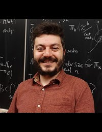
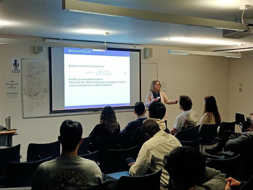

Ozan Evkaya, one of the local organizers of the Edinburgh R User group, recently spoke with the R Consortium about his journey in the R community and his efforts to strengthen R adoption in Edinburgh. He discussed his experiences hosting R events in Turkey during the pandemic, the importance of online engagement, and his vision for expanding collaborations with neighboring user groups. He also reflected on his research in dependence modeling and contributions to open-source R packages, highlighting how R continues to shape his work in academia and community building.

Please share about your background and involvement with the RUGS group.
During my PhD program in statistics from 2012 to 2018, I took several courses in the field. I began engaging with programming languages relevant to my dissertation and applied work throughout that period. I started learning and using the R programming language, particularly after attending one academic workshop event in France.
Many of my colleagues, especially those from the statistics field, innovatively and effectively used these languages. This inspired me to invest more time in developing my skills in this area during my PhD studies. In addition to my postdoc research, I began participating in and organizing small online webinars during the pandemic and continued to do so afterward.
During that time, I met a couple of Turkish colleagues who were key in organizing some R-based events. It was my first experience with the official community-related groups associated with the R Consortium. With their support, we received a budget to help organize online events in Turkey during 2021 and 2022 called Why R Turkiye.
Initially, we started with simple online setups, but in 2022, we organized the event with paper submissions, an improved version of the previous year. The event was well-received, and everyone appreciated our efforts. In our first year, we had a group of six main organizers (including two undergraduate keen students from different universities). By 2022, our team had grown to eight members to foster gender diversity.
This experience taught me what can happen when people are passionate about organizing events online. It was also the first time I truly learned about the community and how others are working to expand their knowledge by sharing and collaborating.
When I joined the University of Edinburgh in March 2022, I began to explore the local R groups available in the area. I discovered the Edinburgh R user group (EdinbR), a local community, and promptly contacted the main organizer to express my interest in joining.
Since then, we have started organizing various local events. However, the group was not very active during 2022 because the lead organizer was busy with personal matters. Another colleague and I stepped in to revitalize the group.
Our organizing team currently consists of three members: myself, Alessia Calafiore (a colleague from the university), and the lead organizer, Mike Spencer, a PhD alumnus of the university who now works as a data scientist for a company based in Edinburgh. These shared connections help create a close-knit and collaborative community, especially since we use one of the university’s buildings for our activities. The team brings together one industry representative (Mike) and two university lecturers—myself from the School of Mathematics, and Alessia, who lectures in Sustainability and Urban Data Science at the Edinburgh School of Architecture and Landscape Architecture. We benefit from excellent group dynamics and a strong foundation of familiarity.
How do you see the balance between industry and academia in the Edinburgh R community? Which industries are actively using R?
In my experience, there is a balance between academics and industry in their use of programming languages. While Python is quite popular in specific fields, especially for certain packages tailored to research and data visualization, R is still preferred for many tasks.
Based on my interactions with members of the Edinburgh R Group and theRoyal Statistical Society’s (RSS) local user groups, I see both industrial professionals and academics actively using R. For example, I can share the experience of one of our MSc students who recently started working at a company in the biostatistics field. They rely on R for data manipulation, and many similar examples are emerging here in Edinburgh.

Edinburgh R User Group Event: “No likelihood? No problem! — Bayesian Statistics in R”
What are your plans for the coming months? What topics do you want to cover?
We are currently organizing monthly events based on feedback gathered from our audience. These events occur on Thursday evenings, allowing participants from academia and industry to join after traditional working hours.
We currently hold these events once a month, featuring two speakers in each session. We connect their topics meaningfully to create a cohesive experience for the audience. We aim to accommodate various levels of expertise, including beginner, intermediate, and advanced users of our language. Last month, we successfully organized a joint event with the RSS local group in Edinburgh. We may consider collaborating with other communities for similar joint events.
This platform allows us to share and spread ideas, potentially creating new event styles. One of my dreams is to organize a more significant event, something we haven’t had enough time to pursue yet. There are local groups nearby, such as the one in Glasgow, that could be involved. I hope to organize a significant event once a year, and while we haven’t discussed it much with those groups yet, I look forward to collaborating with them on this idea.
Do you recommend any techniques for planning for or during the event? (Github, Zoom, other.) Can these techniques be used to make your group more inclusive to people who cannot attend physical events in the future?
We primarily use the Meetup group, which our main organizer, Mike, established several years ago. We are still active, and people are eager to join and register as local group members. Currently, we have 928 members, which is a significant number, I believe. Many of them are enthusiastic about attending our events, and it’s terrific to see so many familiar faces from various organizations at each gathering. The leading platforms we are currently using for the circulation of our events are BlueSky and LinkedIn personal pages.
We want to promote our events through existing channels where our natural audience and contacts are already engaged. This is a fitting space for our outreach. Additionally, our speakers sometimes share their slides on GitHub, mainly when using R to create their presentations. This allows them to easily share their slides and the GitHub repository, enabling everyone to contribute to the open-source community. Aside from the above-mentioned ones, we don’t have any specific technical tools currently in use.
How do you use R for your work?
I rely heavily on R and the various packages for research/teaching and am also trying to contribute to those packages. This dependency started during my PhD, when I focused on dependence modeling with certain available R-based computational packages. A talented group of people who created these open-source packages has already developed many techniques related to dependence modeling in R. While some packages are now available in Python more recently, I still primarily depend on R for these topics.
During my first postdoctoral period, working with colleagues at KU Leuven, I worked on two packages and integrated them for my research project. I’m currently polishing this work before creating a more formal package or sharing it on GitHub—this is still one of my goals. In addition to my original research, I contributed to a Shiny-based research project initiated by a colleague at Boğaziçi University in 2021/2022 to create an R package version of their studies.
Overall, I want to explore various areas beyond my primary research. I’m also using R extensively for teaching purposes, particularly in the data science course I co-teach and the statistics and data visualization courses I run remotely. My reliance on R is significant for these courses, and I am regularly learning new tips or packages from the community that I have been part of.
How do I Build an R User Group?
R Consortium’s R User Group and Small Conference Support Program (RUGS) provides grants to help R groups organize, share information, and support each other worldwide. We have given grants over the past four years, encompassing over 76,000 members in over 90 user groups in 39 countries. We would like to include you! Cash grants and meetup.com accounts are awarded based on the intended use of the funds and the amount of money available to distribute